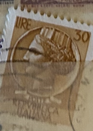
| SOURCE | TITLE| IMAGE MATCH | click to source page |
| eBay | Italian 50 Lire | eBay | 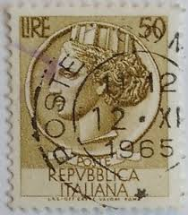 |
| eBay | 1570, Italy Repvbblica Italiana (1954) 30 Lire VINTAGE STAMP, (RARE) | eBay | 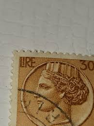 |
| eBay | 1570, Italy Repvbblica Italiana (1954) 30 Lire VINTAGE STAMP, (RARE) | eBay | 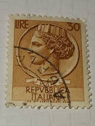 |
| Etsy | Italy Stamp Set Coin of Syracuse 1950's - Etsy | 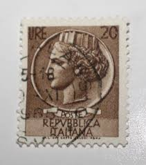 |
| OnlineStampShop | Italy Postage Stamps |  |
| Shutterstock | Postage Stamp Depicting Profile Woman Representing Stock Photo 2715326135 | Shutterstock | 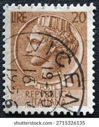 |
| eBay.de | RARE Italy Circa 1958-1966 Stamps 100 and 200 Lire | eBay.de | 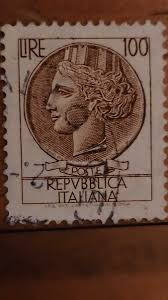 |
| eBay | Poste Repubblica Italiana 90 Lire Postage Stamp Italy Roma Cancelled | eBay | 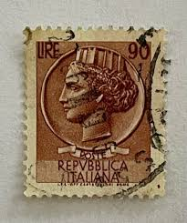 |
| eBay | Italiana 100 Lire for sale | eBay | 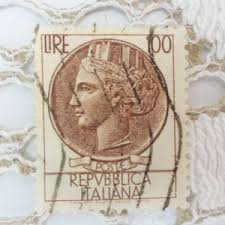 |
| PicClick | VINTAGE REPVBBLICA ITALIANA 120 Lire 1954 Stamp/ Republic Of Italy Stamp $24.99 - PicClick | 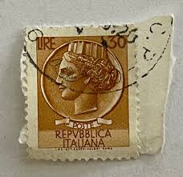 |
| Todocolección | italia - 1935 usado - Buy Antique stamps of Italy on todocoleccion | 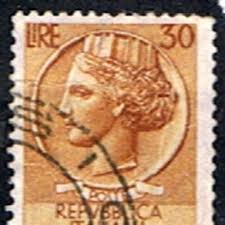 |
| eBay UK | Italy - 1960 - Syracusean Coin - New Colors - 30L - #2388 | eBay UK | 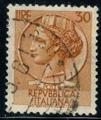 |
| Shutterstock | Italy Circa 1952 Stamp Printed Italy Stock Photo 41353780 | Shutterstock | 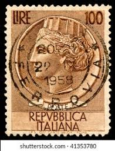 |
| HipStamp | Browse Listings in Europe / HipStamp |  |
| Shutterstock | Sello postal que representa el perfil Foto de stock 2715326135 | Shutterstock | 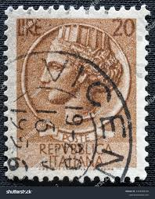 |
| Shutterstock | Italy- Circa 1954 Postage Stamp Printed Stock Photo 119010607 | Shutterstock | 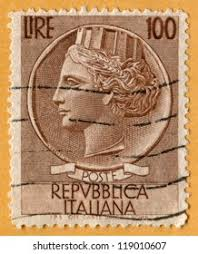 |
| eBay | RARE ITALY STAMP 3 Poste Italy lire 100 Repvbblica Italiana USED | eBay | 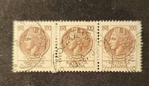 |
| Shutterstock | 1,845 Rome Mail Post Royalty-Free Images, Stock Photos & Pictures | Shutterstock |  |
| Alamy | This is a high resolution scan of a vintage stamp Stock Photo - Alamy | 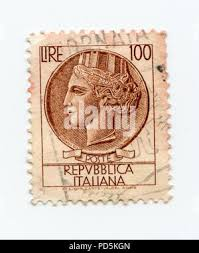 |
| PicClick | ITALIAN POST-1954 A Syracuse Repubblica Italiana 100 L used stamp light brown $10.00 - PicClick | 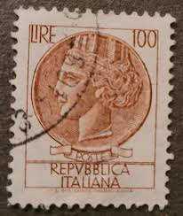 |
| Shutterstock | Woman Letter: Over 261,970 Royalty-Free Licensable Stock Illustrations & Drawings | Shutterstock | 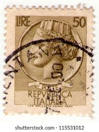 |
| eBay UK | Toys&stamps4u | eBay UK Stores | 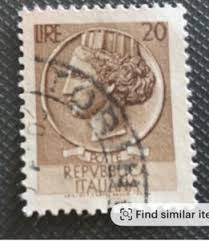 |
| Dreamstime.com | Ancient Rome Postal Poste Stock Photos - Free & Royalty-Free Stock Photos from Dreamstime | 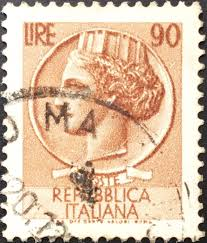 |
| eBay | Rare Italy Stamp, "Coin of Syracuse" series | eBay | 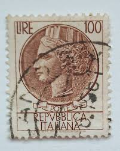 |
| eBay | Rare Italian stamps lire 50 lire 60 | eBay | 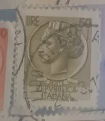 |
| Dreamstime.com | Postage Stamp Italy, 1955, Coin of Syracuse Editorial Photo - Image of heritage, historic: 206388196 |  |
| eBay | Rare 100 Lire Stamp Italy Italian great condition | eBay | 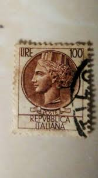 |
| eBay | ETHIOPIA, Italian Occupation Stamp 1936, 30c dark brown, used | eBay | 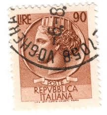 |
| Todocolección | italia. 1980. castillo aragonese. ischia - Buy Antique stamps of Italy on todocoleccion | 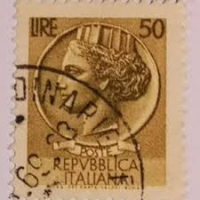 |
| eBay | Italy - 1957 - Syracusean Coin - 50L - #02 | eBay | 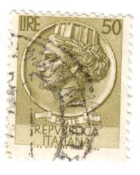 |
| eBay | 1570, Italy Repvbblica Italiana (1954) 30 Lire VINTAGE STAMP, (RARE) Lot of 2 | eBay | 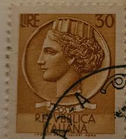 |
| eBay UK | Decimal Parcel Post Italian Stamps for sale | eBay UK | 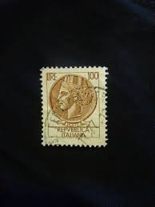 |
| Alamy | ISTANBUL, TURKEY - JANUARY 02, 2021: Cyprus stamp shows Wood Carving Stock Photo - Alamy | 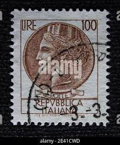 |
| PicClick CA | ITALY, 25 LIRE, Italian Postage Stamp, Poste Repvbblica Italiana, MH $20.00 - PicClick CA | 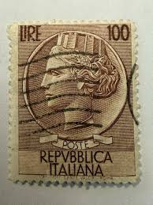 |
| vividagallery.com | Italy Turrita Siracusana Cream White Portrait Definitive Stamp Throw Pillow by Vivida Gallery - Vivida Gallery |  |
| eBay | Italy - 1957 Italia - Syracusean Coin #8 | eBay | 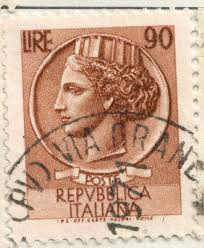 |
| Todocolección | italia - regno - 1929 - serie ”imperiale” perfo - Buy Antique stamps of Italy on todocoleccion | 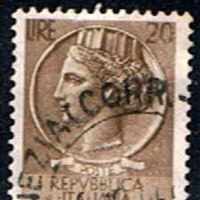 |
| eBay | Syracuse Lire 100 Stars II Notching 13.1/4 Variety | eBay | 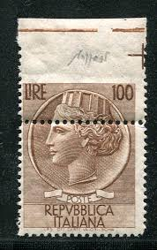 |
| eBay | RARE ITALY STAMP 3 Poste Italy lire 100 Repvbblica Italiana USED | eBay | 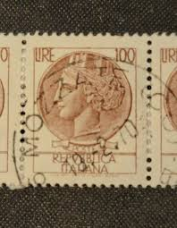 |
| eBay | RARE REPUBLIC OF ITALY Set Of 3 stamps . 50 Lire, 30 Lire , 24 Lire. 1953-1956 | eBay | 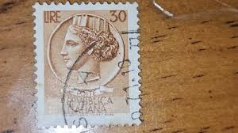 |
| eBay | Italy - 1959 Italia, New Type - Smooth Paper #2 | eBay |  |
| Shutterstock | 387 Italian Lire Old Stamps Royalty-Free Images, Stock Photos & Pictures | Shutterstock | 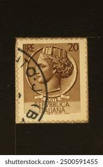 |
| eBay | ITALIAN 100 Lire Syracuse Stamp With Star Watermarks | eBay | 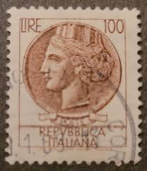 |
| eBay | Syracuse Lire 100 Varieties Eye-Catching Horizontal Paper Fold | eBay | 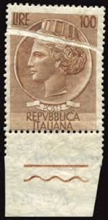 |
| Etsy | 100 Lire Stamp - Etsy Denmark | 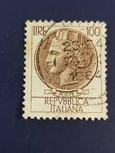 |
| Value or no value : r/stamps | 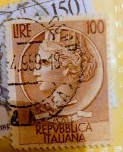 | |
| eBay | Two Poste Italy lire 100 Repvbblica Italiana Rare Stamp Brown | eBay | 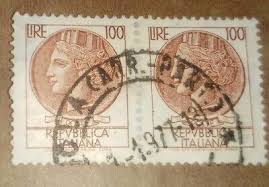 |
| Todocolección | sello italia. republica italiana. monedas de si - Buy Antique stamps of Italy on todocoleccion | 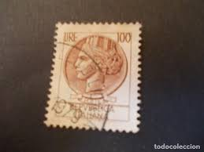 |
| The lines on the old stamps seem gently worn by time, symbols of freedom, flight paths, and the colors of flags intertwine to create a timeless picture 🌎✨ Each stamp is like | 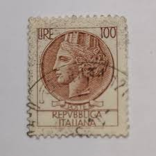 | |
| Etsy | 100 Lire Stamp - Etsy | 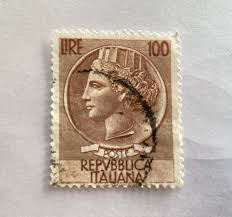 |
| eBay Australia | RARE Italy Circa 1958-1966 Stamps 100 and 200 Lire | eBay Australia | 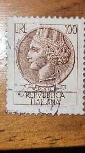 |
| eBay | Rare Italy - Repvbblica Italiana 100Lire; Brown Stamp | eBay | 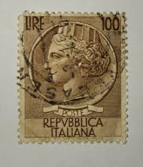 |
| eBay | 1954 ITALY VINTAGE STAMP 30 LIRE POSTE REPVBBLICA ITALIANA Brown UNMARKED | eBay | 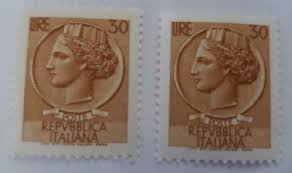 |
| eBay | 1963 ITALY, TURRITA, 100 LIRE, BROWN, 50 LIRE, CIRCULATED FROM ITALY | eBay | 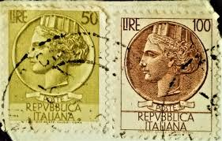 |
| eBay | Rare Italy Stamps 1954 10 Lire | eBay | 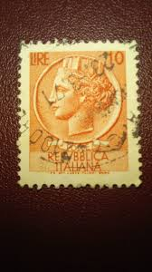 |
| eBay | 1954 Syracuse 100 L Used Rare Stamp Watermark Italy Republic | eBay | |
| eBay | 1968 Coin Of Syracuse Repvbblica Italiana 15 Lire Stamp/ Italian Stamp | eBay | |
| eBay | RARE ITALY STAMP 3 Poste Italy lire 100 Repvbblica Italiana USED | eBay | |
| Mercari | Italian Stamp 100 Lire Rare | Mercari |